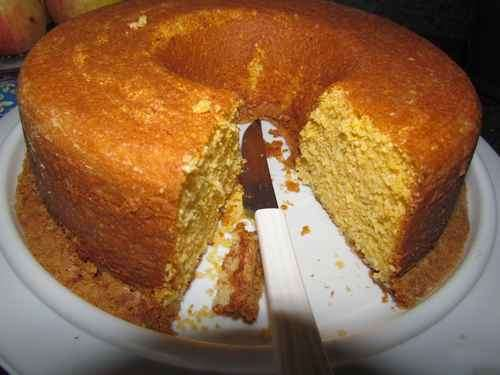

Comece sua receita misturando os ovos com açúcar, em seguida com tudo bem misturado coloque o óleo, leite e aos poucos vá acrescentando a farinha e por fim o fermento
Agora que o forno está pré-aquecido leve ao forno seu bolo numa forma untada e após 25 minutos a 180° retire e sirva essa delicia
Bolo de chocolate
ingredientes
3 ovos
180g de açúcar
260ml de leite
70g de manteiga
790g de leite condensado
80g de achocolatado
200g de creme de leite
250g de farinha de trigo
150g de achocolatado
50g de manteiga
16g de fermento químico
Modo de preparo
Comece seu bolo batendo o açúcar com os ovos inteiros e em seguida acrescente o achocolatado e a farinha de trigo com a manteiga derretida e misture tudo muito bem
Neste momento não deve mais bater tanto para colocar o fermento em pó e só assim levar ao forno numa forma com farinha de trigo e assar
Enquanto seu bolo fica pronto, faça o seu brigadeiro com o leite condensado, o achocolatado e quando estiver começando a soltar da panela despeje creme de leite e está pronto
Retire o bolo do forno e desenforme para poder cortar e por o recheio no meio e em cima para servir
Bolo Recheado de Abacaxi
ingredientes
272g de farinha de trigo
100ml de leite
8g de açúcar
110ml de leite
2 ovos
195g de leite condensado
250ml de leite
110ml de leite de coco
7g de amido de milho
4 ovos
300g de abacaxi
16g de fermento químico
60ml de água
132g de açúcar
Modo de preparo
Para essa receita comece batendo as 4 gemas com 110ml de leite morno, assim que crescer bem despeje 276g de açúcar e bata novamente para que possa levar a outro pote e misturar a farinha de trigo com auxílio de um fuê
Agora com a batedeira limpa bata as 4 claras e agregue aquela massa que fez, e por fim coloque o fermento químico e então leve para assar por 35 minutos em fogo baixo e em seguida retire do forno
Para a calda limpe um abacaxi e bata no liquidificador com 70 ml de água e os 132g de açúcar, leve ao fogo e deixe que encorpe e reduza um pouco
Numa outra panela misture os 260ml de leite, 2 gemas peneiradas, o amido de milho e o leite condensado, misture bem até que fique mostrando o fundo da panela, para finalizar desligue o fogo e reserve com plástico por cima e bem rente
Por fim vamos fazer a sua calda, coloque o leite de coco, 110ml de leite, 8g de açúcar e então misture bem para deixar numa textura fantástica
Indo para parte de montagem passe essa calda numa forma da mesma medida do bolo e com o bolo cortado coloque a parte superior por cima da calda e umedeça com leite e depois o recheio de abacaxi por cima
Faça a camada de creme de creme com uma colher e jogue aquela camada de bolo por cima e então umedeça novamente com o leite e então passe a camada com aquele chattily, leve para geladeira com outro plástico bem rente por cima e em seguida pode desenformar e colocar coco ralado por cima
Sirva essa delicia de receita agora mesmo e aproveite o melhor
Bolo Recheado de Coco
ingredientes
790g de leite condensado
100g de coco ralado
6 ovos
160g de açúcar
250ml de leite
16g de fermento químico
500ml de chantilly
400g de creme de leite
Modo de preparo
Numa panela grande misture o leite condensado e o coco ralado, creme de leite para que possa deixar ferver bastante e a mistura ficar bem densa, em seguida com seu bolo cortado no meio coloque esse recheio e então
Com seu bolo na geladeira reservado bata o chantilly e passe por todo seu bolo e jogue um pouco de coco por cima cerejas se quiser e então sirva essa delicia de bolo
Bolo de Cenoura Fit com Cobertura de Chocolate
ingredientes
3 ovos
120ml de óleo de coco
90g de açúcar demerara
Nibs de cacau
150g de farinha de aveia
10g de fermento em pó
400g de chocolate meio amargo
200g de creme de leite
240g de cenoura
24g de leite em pó
Modo de preparo
Em um liquidificador coloque os ovos, o óleo de coco, as cenouras limpas e raladas, leite em pó, açúcar e em seguida basta bater por cerca de 2 minutos até que a mistura fique homogênea
Agora num recipiente alto coloque a mistura do seu bolo de cenoura e acrescente o Nibs de cacau, em seguida coloque a aveia e fermento em pó, misture bem para dar consistência a massa e basta leva-la para uma forma untada e levar ao fogo
Com o forno pré-aquecido a 180° deixe o bolo por cerca de 40 minutos, em seguida quando já estiver pronto deixe-o esfriar em temperatura ambiente e pode desenformar
Para a cobertura coloque o chocolate em banho maria até que derreta completamente, logo em seguida coloque o creme de leite com o chocolate fora do fogo e basta misturar até que fique uniforme
Agora basta passar a cobertura no seu bolo de cenoura fit e servi-lo
Bolo de Fubá Cremoso
O bolo de fubá cremoso derrete na boca e também pode ser feito no liquidificador! Ele conta com um recheio suculento e fica com 3 camadas durante a montagem!

ingredientes
3 ovos
2 xícaras (chá) de açúcar
2 xícaras (chá) de fubá
3 colheres (sopa) rasas de farinha de trigo
1/2 copo (americano) de óleo
1 copo de leite
1 colher (sopa) de fermento em pó
Modo de preparo
Bata todos os ingredientes no liquidificador.
Coloque em uma forma untada e enfarinhada.
Leve ao forno preaquecido e deixe assar, por cerca de 40 minutos.